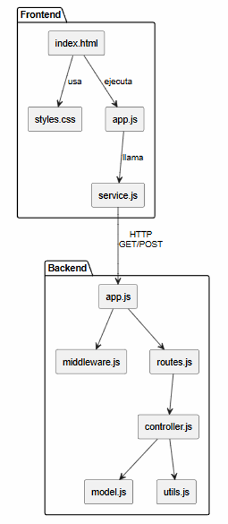
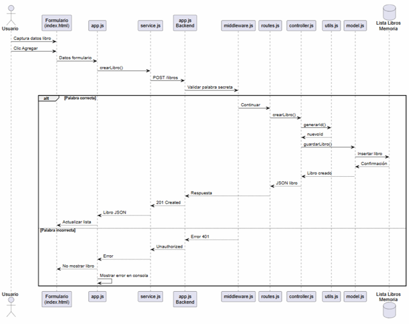
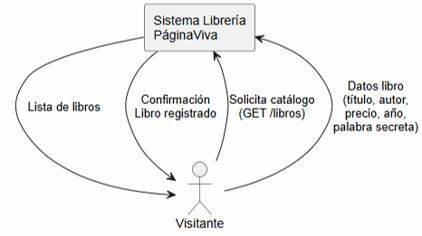
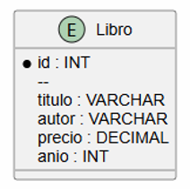

18 de junio de 2026 - PáginaViva
| Nombre | Tipo | Descripción |
|---|---|---|
| id | Entero | Identificador único autogenerado del libro |
| titulo | Texto | Nombre del libro |
| autor | Texto | Autor del libro |
| precio | Decimal | Precio del libro |
| anio | Entero | Año de publicación |
| palabraSecreta | Texto | Clave requerida para registrar libros |
| listaLibros | Arreglo JSON | Colección de libros almacenados |
| respuestaJSON | JSON | Respuesta enviada por el backend |
ListaLibrosMemoria: Libro(id, titulo, autor, precio, anio)
@startuml
skinparam componentStyle rectangle
package "Frontend" {
[index.html] as Vista
[styles.css] as Estilo
[app.js] as Logica
[service.js] as Servicio
Vista --> Estilo : usa
Vista --> Logica : ejecuta
Logica --> Servicio : llama
}
package "Backend" {
[app.js] as EntryPoint
[middleware.js] as Middleware
[routes.js] as Routes
[controller.js] as Controller
[model.js] as Model
[utils.js] as Utils
EntryPoint --> Middleware
EntryPoint --> Routes
Routes --> Controller
Controller --> Model
Controller --> Utils
}
Servicio --> EntryPoint : HTTP\nGET/POST
@enduml

@startuml actor Usuario participant "Formulario\n(index.html)" as Vista participant "app.js" as Logica participant "service.js" as Servicio participant "app.js\nBackend" as App participant "middleware.js" as Middleware participant "routes.js" as Routes participant "controller.js" as Controller participant "utils.js" as Utils participant "model.js" as Model database "Lista Libros\nMemoria" as DB Usuario -> Vista : Captura datos libro Usuario -> Vista : Clic Agregar Vista -> Logica : Datos formulario Logica -> Servicio : crearLibro() Servicio -> App : POST /libros App -> Middleware : Validar palabra secreta alt Palabra correcta Middleware -> Routes : Continuar Routes -> Controller : crearLibro() Controller -> Utils : generarId() Utils --> Controller : nuevoId Controller -> Model : guardarLibro() Model -> DB : Insertar libro DB --> Model : Confirmación Model --> Controller : Libro creado Controller --> Routes : JSON libro Routes --> App : Respuesta App --> Servicio : 201 Created Servicio --> Logica : Libro JSON Logica --> Vista : Actualizar lista else Palabra incorrecta Middleware --> App : Error 401 App --> Servicio : Unauthorized Servicio --> Logica : Error Logica --> Vista : No mostrar libro Logica -> Logica : Mostrar error en consola end @enduml

@startuml rectangle "Sistema Librería\nPáginaViva" as Sistema actor Visitante Visitante --> Sistema : Solicita catálogo\n(GET /libros) Sistema --> Visitante : Lista de libros Visitante --> Sistema : Datos libro\n(título, autor,\nprecio, año,\npalabra secreta) Sistema --> Visitante : Confirmación\nLibro registrado @enduml

@startuml
entity Libro {
* id : INT
--
titulo : VARCHAR
autor : VARCHAR
precio : DECIMAL
anio : INT
}
@enduml
